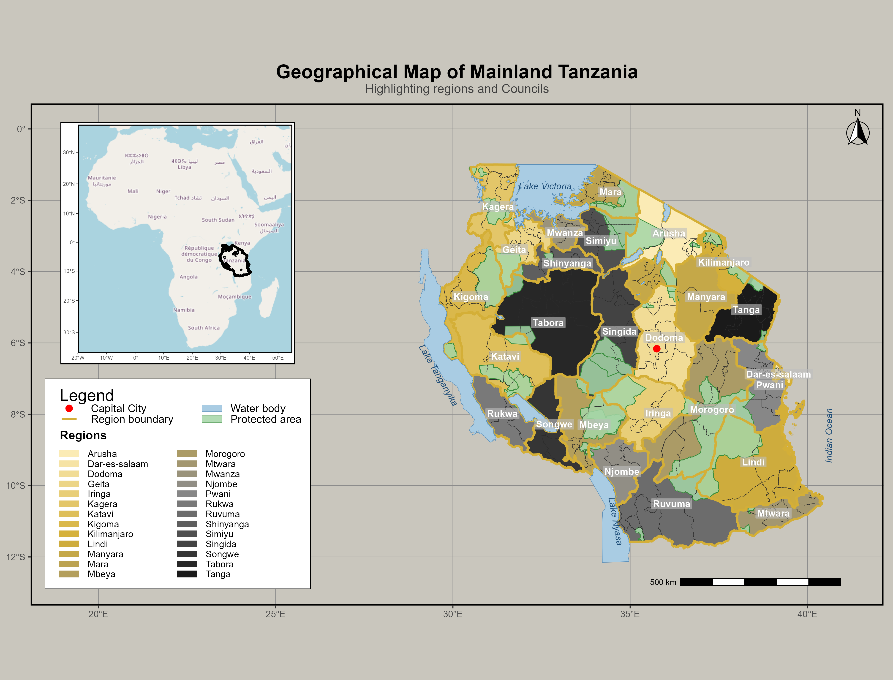
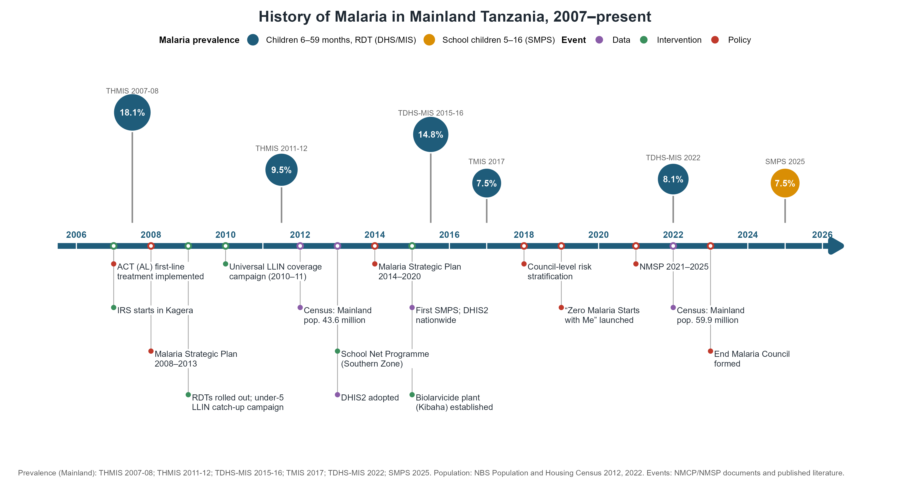
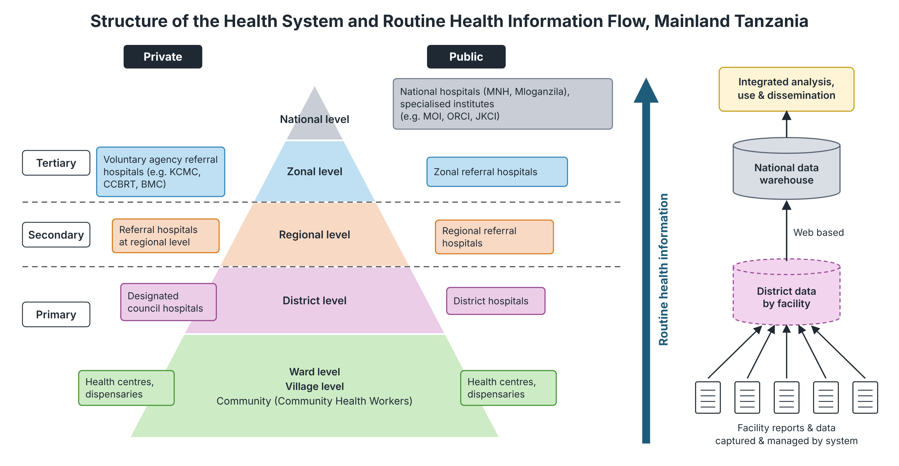
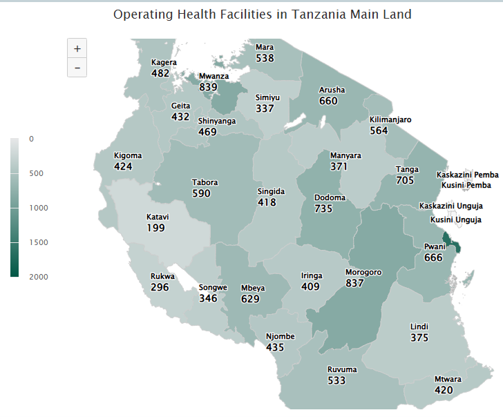
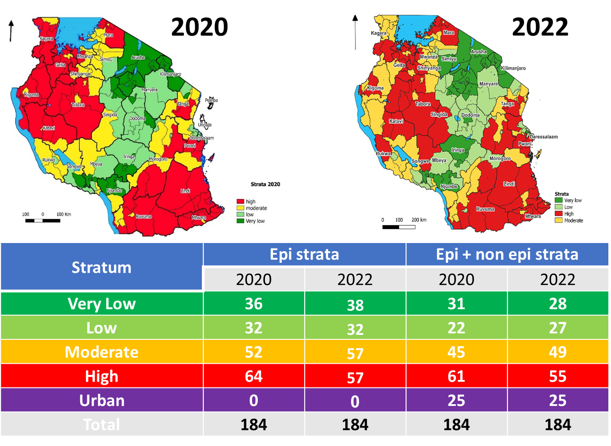
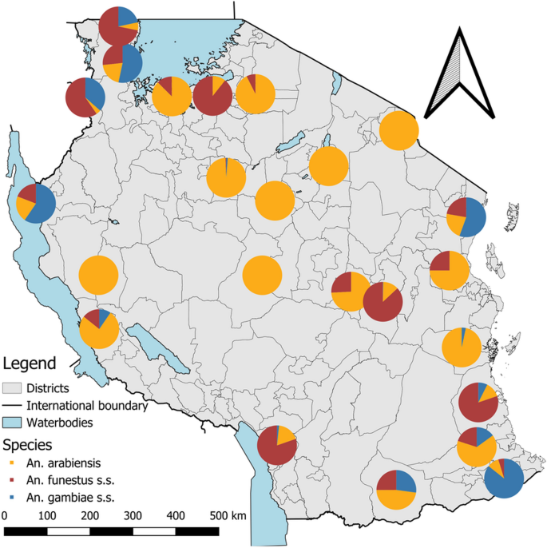
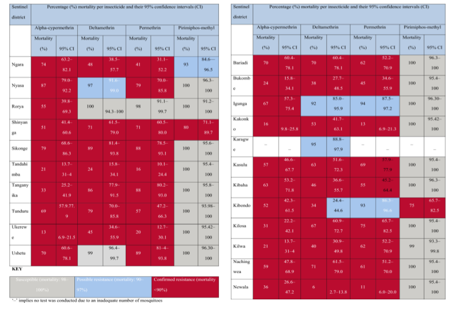

Tanzania Mainland
Prepared by: Yasini Kokoda
Date: 2026-09-30
1. Introduction
Tanzania mainland is located in East Africa, borders Kenya and Uganda to the north, Rwanda, Burundi, and the Democratic Republic of Congo to the west, Zambia, Malawi, and Mozambique to the south, and the Indian Ocean to the east. The official languages are Swahili and English.
2. Summary Statistics
| Statistic | Value | Year | Source |
|---|---|---|---|
| Population | 70,038,850 | 2026 | Tanzania National Bureau of statistics (NBS) |
| Population at risk | 100% | 2024 | WHO country profiles 2026 |
| Prevalence | 5.7% | 2025 | NMCP report 2026 |
| Incidence | 137 per 1,000 population | 2024 | World malaria report 2025 |
| Mortality | 38 per 100,000 population | 2024 | World malaria report 2025 |
| Capital city | Dodoma | 2026 | Tanzania National Bureau of Statistics (NBS) |
| Economic activities & geography | Area approx. 947,300 km²; 65.6% rural, 34.4% urban. Main activities: agriculture, livestock, fishing, mining, manufacturing, trade and services, with agriculture the main source of income. | 2022 | 2022 Population and Housing Census: Basic Demographic and Socio-Economic Profile, Tanzania Mainland (NBS, April 2024) |
3. Administrative Boundaries
Mainland Tanzania is divided into two main administrative levels: regional and council. There are currently 26 regions and 184 councils. The councils are organized according to population settings, with district councils mainly in rural settings and town, municipal, and city councils mainly in urban settings. Each council is divided into four or five divisions; and each division is divided into three or four wards. Five to seven villages form a ward. The council is the most important administrative and implementation authority for public services, including for policies of the Ministry of Health (MOH) and, consequently, those of NMCP.
Figure: tza_admin_boundaries.png

Caption: Regions and councils of Mainland Tanzania, with major water bodies · Source: [source of District_TZ.shp]; water bodies: [source of water_bodies.shp]
4. Malaria Situation
Mainland Tanzania is among the ten countries with the highest malaria burden globally, accounting for 3.3% of global malaria cases and 4.3% of global malaria deaths in 2024. It accounted for 12.7% of malaria cases in East and Southern Africa. Malaria case incidence decreased by 3.5%, from 142 cases per 1,000 population at risk in 2015 to 137 per 1,000 in 2024, while the malaria mortality rate decreased by 13.6%, from 0.44 to 0.38 deaths per 1,000 population at risk over the same period.
According to the SMPS 2025, malaria prevalence was 7.5% among school-aged children (5–16 years) and 5.7% among children under five. Transmission remains heterogeneous across the country. Among school-aged children, prevalence was highest in the Lake (15.7%), Southern (12.5%), and Western (11.3%) zones, and lowest in the Central (0.3%), Northern (1.3%), and Southern Highlands (3.7%) zones. Among children under five, prevalence was highest in the Lake (12.5%) and Southwest Highlands (8.7%) zones.
At the regional level, Kagera had the highest prevalence among school-aged children (23.9%), while prevalence was lowest in Arusha and Iringa (0%), Njombe (0%), Kilimanjaro (0.1%), and Manyara (0.1%). Among children under five, prevalence was highest in Kagera (24.5%) and Mara (17.4%).
Mainland Tanzania has made progress in malaria prevention, although coverage remains heterogeneous. According to SMPS 2025, 73.9% of school-aged children reported that their households owned at least one mosquito net, while 83.7% reported sleeping under a mosquito net the night before the survey. Household ownership was comparable to the 74% reported by the TDHS-MIS 2022, while net use was lower than the 88.8% reported by the 2023 SMPS. Ownership ranged from 56.8% in the Northern zone to 89.9% in the Southern zone, and from 38.8% in Njombe to 96.6% in Pwani at the regional level. Net use was highest in the Eastern (92.8%), Southern (91.7%), and Western (86.3%) zones and lowest in the Central (70.2%), Southern Highlands (76.0%), and Southwest Highlands (79.5%) zones. At the regional level, use was highest in Pwani (96.0%), Dar es Salaam (92.0%), and Mtwara (91.9%), and lowest in Njombe (54.5%), Singida (65.2%), and Manyara (69.8%).
Among pregnant women, 66% reported sleeping under an ITN the night before the survey, while 33% received three or more doses of intermittent preventive treatment in pregnancy (IPTp). IPTp coverage varied substantially by zone, ranging from 50% in the Southern zone to 17% in the Southwest Highlands (TDHS-MIS 2022).
5. History of Malaria (last 20 years)
The graphic below illustrates the trend of malaria prevalence in Tanzania since 2006, alongside significant malaria related events that have occurred. The prevalence values from 2006-2022 are based on data from Demographic and Health Surveys (DHS) and Malaria Indicator Surveys (MIS), while the remaining years are from SMPS survey (2023-2025). Additionally, the country has implemented three National Malaria Strategic Plans (NMSPs) at varying intervals.
Figure: tza_timeline.png

Caption: Malaria prevalence among children aged 6–59 months and key malaria control milestones, Mainland Tanzania, 2007–2025 · Source: THMIS 2007–08 (Table 11.11); THMIS 2011–12 (Table 11.5); TDHS-MIS 2015–16 (Table 12.16); TMIS 2017 (Table 4.6); TDHS-MIS 2022 (Table 12.15); SMPS 2025; NBS Population and Housing Census 2012, 2022; NMCP/NMSP documents
6. Malaria Indicator Summary
Mainland Tanzania adopted the District Health Information System (DHIS2) platform in 2013, with nationwide scale-up completed in 2015. The system currently captures monthly data reported by health facilities across multiple service delivery departments. These include the Outpatient Department (OPD), which records uncomplicated malaria cases; laboratory services, which capture malaria testing and results; the Inpatient Department (IPD), which records severe malaria cases and malaria-related deaths; Reproductive and Child Health (RCH) services, including antenatal care (ANC); and pharmaceutical services, which report malaria commodity availability and consumption.
In addition to DHIS2, the electronic Integrated Disease Surveillance and Response (eIDSR) system supports the timely detection, notification, and response to malaria outbreaks, particularly in low- and very-low-transmission settings. Malaria indicators reported through these systems are generally disaggregated by age group (<1 month, 1–11 months, 1–4 years, and ≥5 years) and sex (male and female), allowing malaria morbidity and service-delivery patterns to be assessed across key population groups. Data flow from health facilities through council and regional health authorities to the national level, where the information is compiled and used for malaria surveillance, monitoring, planning, and response.
6a. DHIS2-derived indicators
| Indicator | Value | Year | Source (DHIS2) |
|---|---|---|---|
| [ ] | [ ] | [ ] | [ ] |
In addition to routine surveillance data collected through DHIS2, Mainland Tanzania monitors malaria transmission through periodic cross-sectional surveys. The main surveys include the Malaria Indicator Survey (MIS), conducted in 2008, 2012, 2015/16, 2017, and 2022, which has been used to assess malaria parasite prevalence among children under five years of age, as well as coverage of key malaria interventions. The School Malaria Parasitaemia Survey (SMPS) has been conducted biennially since 2015 among school-aged children aged 5–16 years to measure malaria parasite prevalence. In addition, malaria infection among pregnant women aged 15–45 years is monitored through testing conducted at antenatal care (ANC) facilities, providing another important source of information on malaria transmission and burden among pregnant women.
6b. Survey-derived indicators
Values are percentages (except the mean number of ITNs per household) for Tanzania as a whole (Mainland and Zanzibar combined), as published in DHS StatCompiler. NA = not available for that survey.
| Indicator | 2022 TDHS-MIS |
2017 TMIS |
2015–16 TDHS-MIS |
2011–12 THMIS |
2010 TDHS |
2007–08 THMIS |
2004–05 TDHS |
|---|---|---|---|---|---|---|---|
| Malaria prevalence according to RDT | 7.9 | 7.3 | 14.4 | 9.2 | NA | 17.7 | NA |
| Malaria prevalence according to microscopy | NA | NA | 5.6 | 4.1 | NA | NA | NA |
| Mean number of insecticide-treated mosquito nets (ITNs) per household | 1.6 | 1.8 | 1.6 | 2.3 | 1.2 | 0.7 | 0.4 |
| Persons with access to an insecticide-treated mosquito net (ITN) | 58.4 | 62.5 | 55.9 | 74.5 | 46.6 | 25.4 | 15.6 |
| Population who slept under an insecticide-treated mosquito net (ITN) last night | 58.9 | 52.2 | 49.0 | 68.4 | 45.2 | 20.4 | 14.9 |
| Existing insecticide-treated mosquito nets (ITNs) used last night | 82.1 | 66.7 | 69.4 | 75.1 | 81.9 | 70.7 | NA |
| Children under 5 who slept under an insecticide-treated net (ITN) | 64.1 | 54.6 | 54.4 | 72.0 | 63.6 | 25.7 | 16.0 |
| Pregnant women who slept under an insecticide-treated net (ITN) | 65.7 | 51.4 | 53.9 | 74.8 | 56.9 | 26.7 | 15.8 |
| Households with indoor residual spraying (IRS) in last 12 months | NA | NA | 5.5 | 13.9 | NA | NA | NA |
| SP/Fansidar 2+ doses during pregnancy | 58.4 | 56.1 | 35.3 | 33.2 | 27.2 | 30.7 | 22.3 |
| SP/Fansidar 3+ doses during pregnancy | 31.7 | 25.8 | 8.0 | 4.0 | 2.7 | 7.0 | 2.8 |
| Children with fever for whom advice or treatment was sought | 77.6 | 75.4 | 81.2 | 78.3 | 78.8 | 74.2 | 83.9 |
| Children with fever for whom advice or treatment was sought, the source was a public sector facility | 49.0 | 46.7 | 36.6 | 47.8 | 11.8 | 49.3 | 43.2 |
| Children with fever who were diagnosed with malaria by a healthcare provider | 31.3 | NA | NA | NA | NA | NA | NA |
| Children with fever who took antimalarial drugs | NA | 36.2 | 51.1 | 53.7 | 59.1 | 56.7 | 60.0 |
| Children who took any ACT | 94.7 | 89.4 | 84.9 | 61.1 | 62.2 | 37.6 | 7.5 |
Source: ICF, The DHS Program STATcompiler (www.statcompiler.com), accessed 12 October 2026; export file STATcompilerExport20261012_155036.xlsx. Additional survey: School Malaria Parasitaemia Survey (SMPS) 2025 — malaria prevalence among school children aged 5–16 years, 7.5%.
7. Health System
The national health system in Tanzania operates under a decentralized government structure, with the Ministry of Health (MoH) and the President’s Office–Regional Administration and Local Government (PO-RALG) sharing responsibility for the delivery of public health services. The MoH is responsible for policy development, formulation of guidelines, and monitoring, while also directly managing referral hospitals, particularly national-level hospitals.
Tanzania has approximately 14,321 registered and functional health facilities, of which 60% are publicly owned and 40% are privately owned. These include 9,016 (63.0%) dispensaries, 1,441 (10.1%) health centers, 1,125 (7.9%) clinics, 1,920 (13.4%) health laboratories, 484 (3.4%) hospitals, and 335 (2.3%) other facilities. The health system is organized hierarchically according to administrative level, facility type, and function, with a referral structure extending from primary healthcare to tertiary care.
At the primary healthcare level, dispensaries, clinics, health centers, and district hospitals provide essential health services. A dispensary typically serves a population of 6,000–10,000 people, a health center 50,000–80,000 people, and a district hospital more than 250,000 people. Regional hospitals provide secondary-level referral services for district hospitals, while zonal hospitals receive referrals from regional hospitals. National hospitals provide tertiary-level referral services from both zonal and regional hospitals. Specialized hospitals that do not fit within this hierarchy are directly linked to the Ministry of Health.
Community health workers (CHWs) also play an important role in the health system by collecting community-level health data during household visits and community activities and facilitating referrals from communities to health facilities. CHWs record daily information using MTUHA Book No. 3, with completed records maintained at health facilities. Facility in-charges subsequently compile monthly summaries in MTUHA Book No. 10 for entry into the Health Management Information System (HMIS/DHIS2) or submission to the council for data entry (Community Health Roadmap). Tanzania currently has approximately 20,487 CHWs and aims to expand the workforce to more than 150,000 within five years.
Figure: tza_health_system.png

Caption: Structure of the health system in Mainland Tanzania (public and private, primary to tertiary level) and the flow of routine health information from facilities to the national data warehouse · Source: [source of the diagram]
Figure (if available): tza_facilities_map.png

Caption: Number of operating health facilities by region, Mainland Tanzania · Source: Health Facility Registry (HFR), Ministry of Health, accessed [date]
8. Stratification Maps
The most recent national malaria risk stratification framework was developed as part of the National Malaria Strategic Plan (NMSP) 2021–2025, building on the country-led stratification approach developed following the 2017 mid-term review of the previous malaria strategic plan. In Mainland Tanzania, the council was selected as the primary operational unit for malaria risk stratification, reflecting its role in resource allocation and implementation of malaria control activities. The stratification incorporated five indicators selected based on the availability, frequency, and robustness of malaria data: Plasmodium falciparum parasite prevalence among school-aged children (PfPR₅–₁₆) from the School Malaria Parasitaemia Survey (SMPS), fever test positivity rate (TPR), annual parasite incidence (API), confirmed malaria incidence, and malaria test positivity among pregnant women attending antenatal care (ANC). The routine indicators were derived from HMIS/DHIS2, while PfPR₅–₁₆ was obtained from council-representative school malaria surveys.
The stratification followed a three-step composite scoring approach. First, each indicator was categorized into four epidemiological risk groups—very low, low, moderate, and high—using predefined thresholds. For PfPR₅–₁₆, the corresponding thresholds were <1%, 1–<5%, 5–<30%, and ≥30%; equivalent thresholds were defined for TPR, API, confirmed malaria incidence, and ANC TPR. Because historical evidence for appropriate thresholds for routine fever and incidence indicators was limited, the PfPR₅–₁₆ classification was used to guide the selection of thresholds for these indicators. Second, each indicator category was assigned a score from 1 (very low) to 4 (high). A conservative approach was applied to routine indicators, with councils classified according to the maximum risk observed over the preceding three years, reducing the likelihood that temporary declines would result in councils being assigned to an unnecessarily lower risk category. Third, the scores across the five indicators were summed for each council to produce a composite risk score ranging from 4 to 16. Councils scoring ≤6 were classified as very low risk, >6–10 as low risk, >10–14 as moderate risk, and >14 as high risk. Urban councils were additionally treated as a separate operational stratum because of their distinct operational and intervention requirements. The NMSP describes this stratification as a continuous process, with strata expected to be updated every three years as part of mid-term strategic reviews.
Figure: tza_stratification_2022.png

Caption: Council-level malaria risk stratification, Mainland Tanzania, 2020 and 2022, with the number of councils per stratum (epidemiological strata, and epidemiological plus urban strata; 184 councils) · Source: National Malaria Control Programme (NMCP)
9. Environment and Seasonality
Mainland Tanzania lies approximately between 1° and 12°S and 30° and 40°E and has a predominantly tropical climate, with substantial regional variation influenced by altitude, topography, and proximity to the Indian Ocean and major lakes. The coastal lowlands are generally hot and humid, with temperatures of about 25–32°C, while the central plateau is warmer during the day, cooler at night, and generally drier. The Northern and Southern Highlands have a more temperate climate, with temperatures generally ranging from 15–25°C. Areas around Lakes Victoria, Tanganyika, and Nyasa are relatively warm and humid and receive comparatively higher rainfall. Annual rainfall varies considerably across the country, generally ranging from 800 to 1,600 mm, with wetter conditions along the coast and in parts of the northern highlands and drier conditions across much of the central plateau (NMSP 2021-2025).
Rainfall and temperature also vary seasonally, with most areas experiencing distinct rainy and dry periods. The main rainy season generally occurs from March to May, followed by a longer dry period from June to September, while shorter rains commonly occur from October to December. These climatic and ecological conditions influence malaria transmission through their effects on vector breeding, parasite development, and mosquito survival. Rainfall provides breeding sites for malaria vectors, temperature affects the duration of parasite development within mosquitoes, and relative humidity influences vector longevity. Consequently, spatial and seasonal variation in rainfall, temperature, and humidity contributes to differences in malaria transmission across Mainland Tanzania (NMSP 2021-2025).
10. Vector Profile
The major malaria vectors in most areas of Mainland Tanzania belong to the Anopheles funestus group and the Anopheles gambiae complex. An. funestus accounts for the largest proportion of malaria vector species (56.3%), followed by An. arabiensis (24.9%) and An. gambiae s.s. (18.8%). Both An. funestus and An. gambiae s.s. exhibit endophilic and anthropophagic behaviour, making them particularly susceptible to indoor vector control interventions such as indoor residual spraying (IRS) and long-lasting insecticidal nets (LLINs) (NMSP 2021–2025).
However, the effectiveness of these insecticide-based interventions is increasingly threatened by the emergence and spread of insecticide resistance among malaria vectors. Country-wide insecticide resistance monitoring conducted in 22 sentinel districts across Mainland Tanzania between May and July 2023 demonstrated widespread pyrethroid resistance in Anopheles gambiae s.l. Resistance to alpha-cypermethrin was detected in all 21 sentinel sites where it was tested, while resistance to deltamethrin and permethrin was observed in 17 of 22 and 19 of 22 sites, respectively. In contrast, An. gambiae s.l. remained susceptible to pirimiphos-methyl in 18 of 22 sites, with confirmed resistance detected in Kibondo and Shinyanga and suspected resistance in Ngara. Resistance intensity testing indicated low-to-moderate resistance to permethrin and deltamethrin, with susceptibility restored at 10 times the diagnostic concentration, whereas high-intensity resistance to alpha-cypermethrin was detected in Bukombe, Kilwa, and Ukerewe. Pre-exposure to piperonyl butoxide (PBO) restored susceptibility to pyrethroids in 13 of 16 sites, while partial restoration was observed in Kakonko, Tandahimba, and Newala, suggesting an important contribution of metabolic resistance mechanisms (Kabula, Mlacha et al. (2024)).
Molecular analyses further showed that An. arabiensis was the predominant member of the An. gambiae complex, accounting for 89.5% of successfully identified specimens, compared with 10.5% for An. gambiae s.s. The kdr L995S mutation was detected in 21 of 22 sentinel districts, while L995F was detected in 20 of 22 districts. In An. arabiensis, the overall allele frequencies were 46% for L995S and 35% for L995F, while corresponding frequencies in An. gambiae s.s. were 44% and 25%, respectively. The ace-1 G119S mutation occurred at much lower frequencies, at 1.0% in An. arabiensis and 0.58% in An. gambiae s.s. These findings indicate widespread pyrethroid resistance across Mainland Tanzania, with both target-site and metabolic mechanisms contributing to the observed resistance phenotype (Kabula, Mlacha et al. (2024)).
Figure (maps recommended): tza_species_map.png

Caption: Relative composition of malaria vector species (An. arabiensis, An. funestus s.s., An. gambiae s.s.) at sentinel sites, Mainland Tanzania · Source: [paper or report the map comes from]
Resistance profile: Percentage mortality (with 95% confidence intervals) of An. gambiae s.l. exposed to alpha-cypermethrin, deltamethrin, permethrin and pirimiphos-methyl in 22 sentinel districts, May–July 2023 (red = confirmed resistance, <90% mortality; blue = possible resistance, 90–97%; grey = susceptible, 98–100%). See tza_InsecticideResistance.png. Source: Kabula, Mlacha et al. (2024)

11. References
One row per reference. Tag must be one of: Intervention · Resistance · Epidemiology · Diagnostics · Vector Bionomics · Health System · Policy/Strategic Plan
| Title | URL | Description | Tag |
|---|---|---|---|
| [ ] | [ ] | [ ] | [ ] |
| [ ] | [ ] | [ ] | [ ] |
Anything else DET should know
[Optional — flag any data gaps, uncertainty about a figure, or questions here rather than leaving DET to guess.]